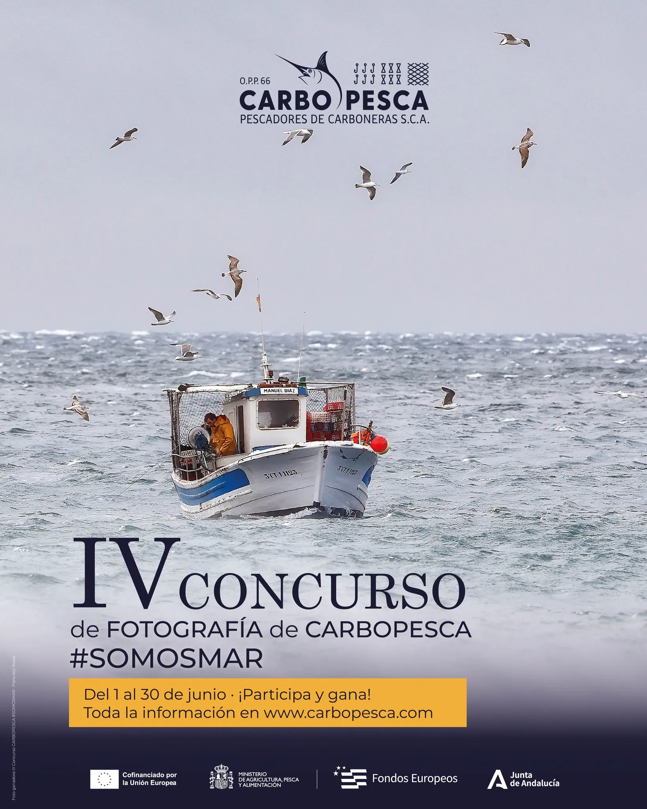
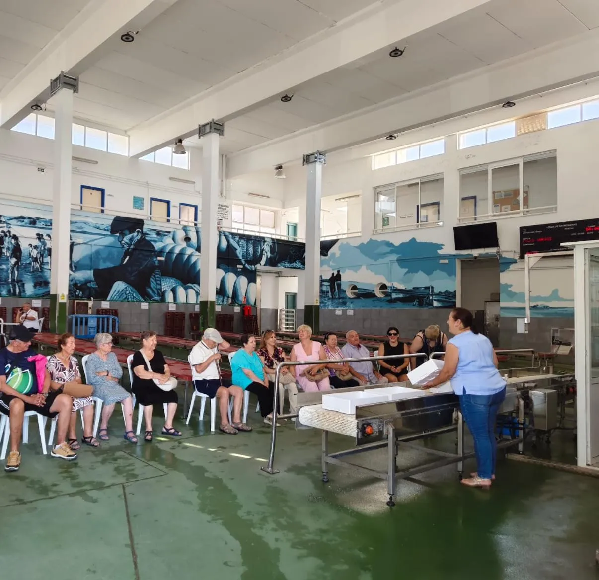
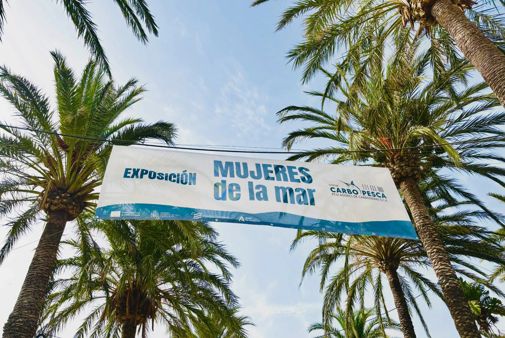
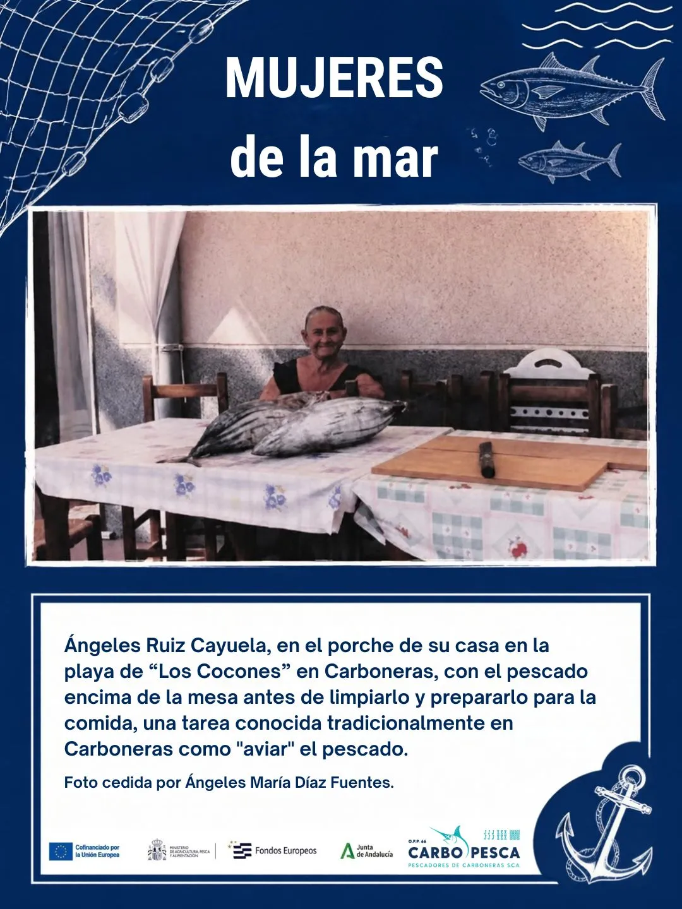
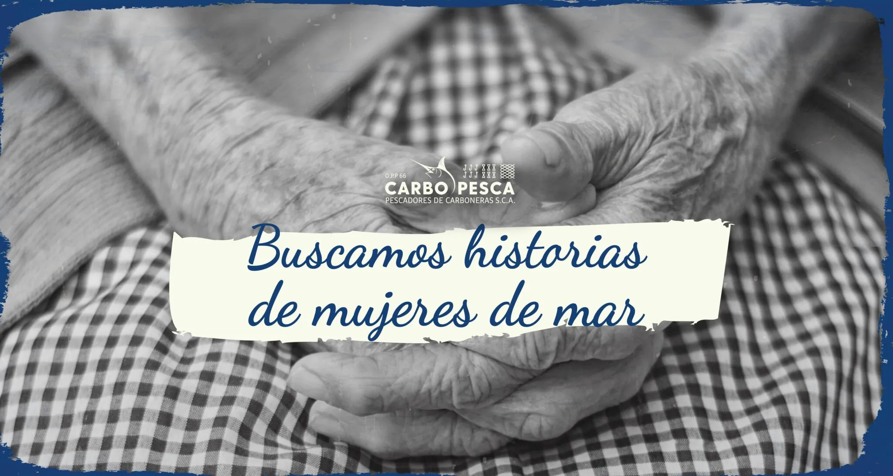

10 · Mujeres y pesca
Carbopesca O.P.P. 66
Carbopesca es la organización de productores pesqueros de Carboneras, Almería. Representa al sector, trabaja en comercialización y promueve una pesca con menor impacto ambiental.





Vínculo con el proyecto
Su convocatoria de fotografías de mujeres vinculadas al mar y sus publicaciones sobre las trabajadoras del sector abren una conexión directa con Dones amb Sal, Slowfish y Palamós. Puede aportar referentes, contactos y un contrapunto geográfico dentro del Mediterráneo español.
Propuesta
Conocer el programa dedicado a mujeres del mar, identificar protagonistas y explorar una visita a Carboneras que conecte faena, puerto, organización colectiva y vida familiar.
Contacto
+34 950 130 050 · administracion@carbopesca.com